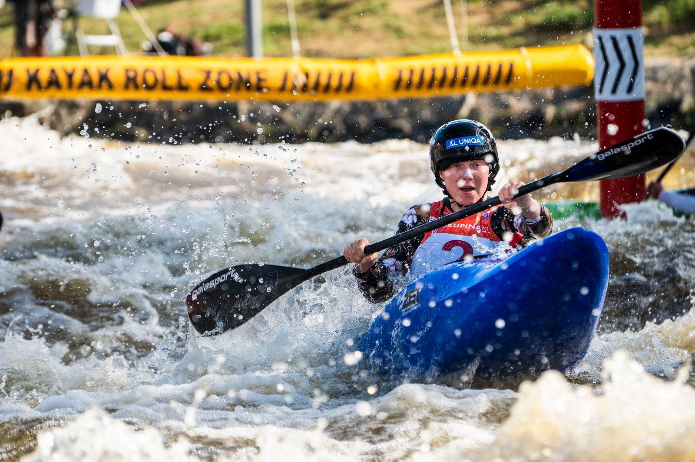
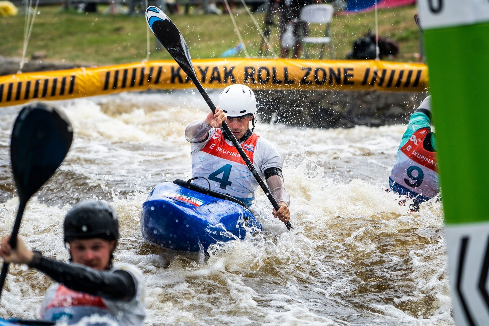

Juniorka Olga Samková vybojovala na evropském šampionátu v Českých Budějovicích čtyři medaile – ke zlatu a stříbru v hlídkách a individuálnímu stříbru na kajaku přidala i mistrovský titul v extrémním slalomu. Ve finále závodníků do 23 let se představil Vojtěch Heger, který skončil na čtvrtém místě. Česká výprava na domácím šampionátu získala celkem 13 cenných kovů.
Do dnešních bojů v extrémním slalomu postoupilo 16 závodníků v každé kategorii, český tým měl zastoupení ve finále v kategorii mužů do 23 let a juniorkách. Pro vítězství si před domácím publikem dojela Olga Samková, která na šampionátu startovala na kajaku i kánoi. K jedné individuální a dvěma hlídkovým medailím přidala i cenný triumf v extrémním slalomu. „Musím říct, že mě extrémní slalom strašně baví. Můj trenér si asi moc nepřeje, abych to jezdila, ale mě to moc baví a jsem ráda, že mi to dneska vyšlo. Lehce jsem zaškobrtla v první protivodě, tam mi to úplně nevyšlo, myslela jsem, že se převrátím, ale ustála jsem to. Je to pecka, jsem opravdu moc šťastná,“ dodala čtyřnásobná medailistka.


Do finále se probojoval Vojtěch Heger, který však skončil na nepopulárním čtvrtém místě. „Výsledek je na jednu stranu skvělý, ale být čtvrtý ze čtyř je blbé a v tento moment to fakt mrzí. Jízda byla taková divoká, kolem první protivody mě soupeři úplně zastavili, mohlo se to vyvíjet jinak. Bohužel to nevyšlo,“ okomentoval český kanoista, který zároveň nastupuje i v extrémním slalomu. „Je to pro mě těžší než pro kajakáře, spoustu let jsem na kajaku nejezdil, občas nevím, co dělat s tím druhým listem. A když pak ještě přijde ten kontakt, tak mi začíná v hlavě guláš a lovím poslední vzpomínky na to, kdy jsem na kajaku jezdil,“ přiznal s úsměvem novopečený mistr Evropy v individuálním závodě.


Juniorští kajakáři neprošli přes semifinále, kajakářky do 23 let skončily ve čtvrtfinále.
Domácí tým na šampionátu v Českých Budějovicích vybojoval celkem 13 medailí – devět individuálních a čtyři v závodě hlídek.